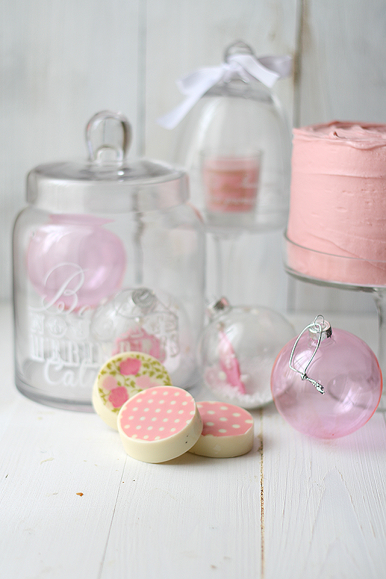
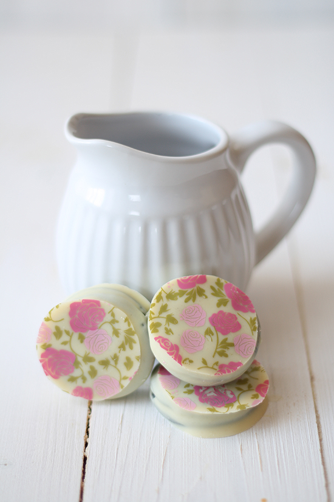
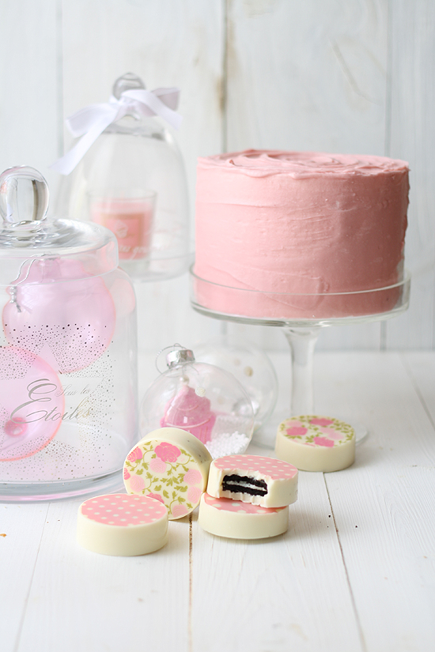
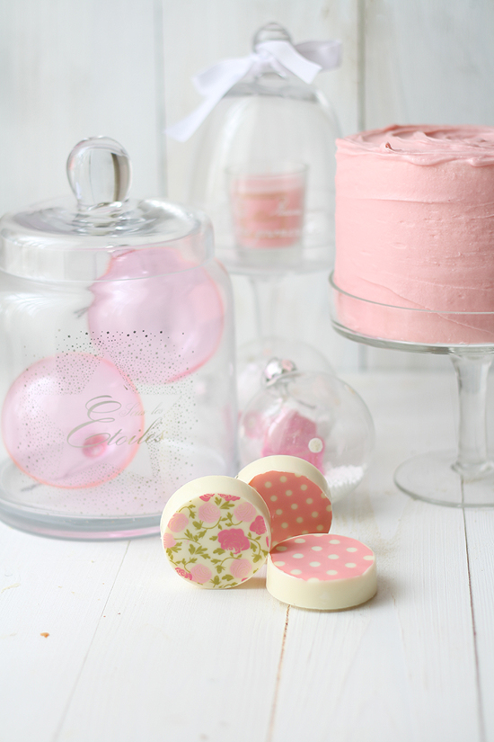

{kind=link}

{kind=link}

Por fin!!!! Ya hay fecha para la firma en Valladolid. Así que todos los de Valladolid y alrededores, tenéis una cita
el día 18 de Diciembre a las 19.30 en el Corte Inglés de Paseo Zorrilla, donde haré una pequeña demo y firmaré mi libro. Por supuesto habrá merienda, que incluirá, entre otras cosas, estas galletas! Bueno, estas no, que ya se las comieron mis alumnos. Otras que haré especialmente para la ocasión :) Os espero con mucha ilusión!!!!
Ahora os cuento que este mes he colaborado en un Ebook (gratuito) para
Maisons du mondejunto con otros bloggers europeos, con distintas recetas y propuestas de decoración navideñas, y
aquí podéis ver el resultado.
Mi propuesta han sido estas
oreo bañadas en chocolate(receta incluida en
"Las recetas de la felicidad") Realmente es tan sencilla que no se le puede ni llamar receta, más bien es una
manualidad comestible. Pero lo que me gusta es que es una idea genial para principiantes en la cocina, para que todo el mundo diga: "eso puedo prepararlo hasta yo", y sobre todo, es un regalito gastronómico muy apañado para estas Navidades. En el próximo post os mostraré cómo preparar algo similar, pero totalmente casero para lo más lanzados... De momento, os recuerdo que hace tiempo publiqué la
receta de las galletas oreo, si queréis hacer una versión totalmente hecha en casa de la receta de hoy.
Para preparar estas galletas hay distintos métodos, que podéis encontrar en
numerosas webs americanas. Yo os presento dos formas que en mi opinión son las más sencillas y rápidas, dependiendo de si tenéis molde para hacerlas, o no.
Si disponemos de molde para oreo, o algo similar al
molde que yo he usado(que realmente es un molde para hornear mini tartas), seguiremos este paso a paso.

Si por el contrario, no disponemos de molde, optaremos por esta otra manera. El acabado es menos perfecto, pero también bonito. Y desde el punto de vista del sabor, a mí me gusta más esta versión que la otra, al llevar menos chocolate la encuentro más equilibrada

El
transfer para chocolatees una lámina con un dibujo impreso de manteca de cacao y colorantes alimentarios. Al poner el chocolate fundido encima, el grabado se imprime en el chocolate. Cuando el chocolate está totalmente frío, la lámina de transfer se despega con facilidad, y el dibujo queda grabado en el chocolate. Podéis encontrar transfer para chocolate en numerosas tiendas online: ahora mismo en casa tengo estos de
Cupcakes a diario, que son los de las fotos, y estos de
Maria Lunarillos(que sirven también para bizcochos y galletas, aunque con esa finalidad aún no los he probado)
Antes de irme, me gustaría hablaros de tres iniciativas que me parecen muy bonitas, y en las que he colaborado... Sería genial que vosotros también os animaseis a participar en la medida de vuestras posibilidades... a veces los pequeños gestos suponen una gran diferencia :)
- Este año voy a ser una Reina Maga de verdad. Me he apuntado a este proyecto
"Reyes Magos de verdad"para que ningún niño o anciano que esté solo se quede sin regalo esta Navidad. Solo espero que no me hagan ponerme barba, me queda fatal. Por la corona en cambio no hay problema :P (gracias a Marián de
De repente mamipor darme a conocer este proyecto!)
- He colaborado también en este
"Dulce calendario solidario", organizado por Mayte, del blog Tu Tentación Mas Dulce. Los beneficios íntegros que se recauden irán destinados a
Run4smile, una asociación muy activa que ayuda a muchos niños.
- Este proyecto de Intermon Oxfam,
"Alimentos con poder"que nos presenta Mikel L. Iturriaga
en este vídeo, y que te descubrirá que simplemente enviando un SMS puedes cambiar vidas.
Mil gracias de antemano por vuestra ayuda solidaria! Y ahora corriendo corriendo a preparar estas galletas para toda la gente que queréis!!!
{kind=link}

{kind=link}

Oreo bañadas en chocolate
Preparación: 15 minutos
Cocción: 2 min
Raciones: 8-12 galletas oreo
Ingredientes
- 8-12 galletas oreo
- 300 g de chocolate blanco (o candy melts blanco)
- 50 g de manteca de cacao (opcional)
- 1 lámina de transfer (opcional)
- Equipamiento (opcional): Molde de silicona de 8-12 cavidades redondas.
- Fundimos el chocolate troceado junto con la manteca de cacao en el microondas, programando de 30 en 30 segundos, y removiendo de cada vez. Debemos hacerlo con cuidado de no quemar el chocolate, ya sabéis que el chocolate blanco es más delicado y difícil de fundir. Ahora, la manera de trabajar en esta receta va a depender de si disponemos de molde o no.
- Si disponemos de molde, lo colocamos sobre una bandeja (para poder trasladarlo después sin que pierda forma). Cortamos círculos de la lámina de transfer del tamaño de las cavidades del molde y los colocamos en la base (con la parte rugosa, que es la que pega, hacia arriba). Vertemos un par de cucharaditas de chocolate sobre la lámina hasta cubrirla. Colocamos una galleta oreo encima, y terminamos de recubrir la galleta con otro par de cucharaditas de chocolate. Damos unos golpes con la bandeja contra la mesa, para que el chocolate se distribuya bien en los moldes, y se rellenen todos los huecos o burbujas de aire que hayan podido quedar. (Golpeamos suavemente, no pensando en el vecino que siempre aparca en tu sitio). Dejamos enfriar en el frigorífico, o en un lugar fresco y seco ahora en invierno (en verano, frigorífico indispensable!).Una vez solidificado el chocolate, desmoldamos las galletas, y retiramos con cuidado la lámina de transfer despegándola (funciona como una calcomanía para chocolate). Conservamos las galletas en un lugar fresco hasta su consumo. Con esta opción salen entre 8 y 12 galletas, dependiendo de cuánto chocolate usemos para el molde, y de su tamaño.
- Si no disponemos de molde, bañamos las galletas en el chocolate, dejando escurrir el exceso. Disponemos las galletas en una lámina de papel de hornear. Con una espátula, las trasladamos a otra bandeja forrada con papel de hornear (es la única manera de que se elimine totalmente el chocolate sobrante). Cortamos el transfer en cuadrados del tamaño de nuestras galletas, y lo colocamos sobre cada galleta, presionando ligeramente con los dedos para que quede adherido (recordad, la cara rugosa del transfer en contacto con el chocolate!). Dejamos enfriar en el frigorífico, o en un lugar fresco y seco ahora en invierno (en verano, frigorífico indispensable!).Una vez solidificado el chocolate, retiramos con cuidado la lámina de transfer despegándola (funciona como una calcomanía para chocolate). Conservamos las galletas en un lugar fresco hasta su consumo. Con esta opción saldrán más 12 de galletas, ya que se usa mucha menos cantidad de chocolate para bañarlas
Preparación
- Puedes usar chocolate con leche en lugar de chocolate blanco.
- La manteca de cacao es opcional en esta receta. Sirve para hacer más líquido el chocolate blanco. Si usáis chocolate blanco especial para fundir, no será necesaria (de hecho en la receta publicada en mi libro, no la uso). Si usáis candy melts, puede hacerse más líquido con un poco de aceite de girasol en lugar de la manteca de cacao
- Si quieres preparar en casa las galletas oreo, puedes encontrar la receta aquí
- Si has preparado esta receta, y quieres enviarme una foto y tus comentarios para que los publique en el blog, por favor hazlo a través de este formulario .
- Ya está a la venta mi libro "Las recetas de la felicidad" con un montón de recetas nuevas! Puedes adquirirlo en cualquier librería, si quieres más información sobre el libro, puedes encontrarla aquí
- Puedes seguir las novedades del blog a través de Facebook, o Twitter, o suscribiéndote aquí para recibir las recetas en tu mail